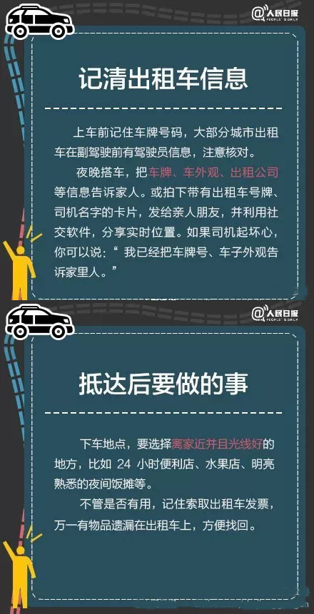

一、防诈骗论(情感、经济、推销、信息、社会)
不要轻信陌生电话、短信及网上信息，凡收到陌生人要求退款、转账或汇款的电话/短信，须何核实，不要提供自己的银行卡信息、网银账号、动态密码、验证码etc。
二、爪机，你要去哪里呀
数一数那些年让人肾疼的丢失
（1）食堂就餐，边玩手机边吃、路上玩手机等等，有可能被小偷盯上；然后等放口袋后，已被知道爪机的藏身之处；
（2）运动时，包、衣物等放无人看管的球场边 ；
（3）自习中，上厕所/打水等离开忘记随身带 ；
（4）手机借用一下；
（5）好友聚会和情侣谈情时，注意力分散；
（6）掉坑里，呵呵= =||。
三、身份证、银行卡丢失肿么破
只丢银行卡的话找不到就挂失补办；
丢身份证的话先反省下吧，因为如果被坏人得到可以凭身份证干很多事！以财务为例可以挂失掉你的银行卡后提现，没密码的直接提；也可以新办透支类银行卡，那就啥都不用解释，乖乖替人还钱。银行卡和手机绑定比较快看到转账信息，但也存在个需要特别注意的地方，比如说手机木马病毒。
四、外出篇（偏向女生）
（1）财不外显 ；
（2）夜间外出勿独行，忌挑偏僻小路去，不带耳机听四周，还需留意慢行车。
五、接电话篇
（1）400开头，多点心！多为广告or诈骗！
警方提醒：正规大型企业单位“400”热线一般只作为被叫，不会用作主叫外呼 ！
（2）2014年出现过的其他伪号码
“10086”不一定真、“童鞋换积分么” 、
“+57110”等“警方”电话、“你涉嫌洗黑钱了”......
建议：对于号码看起来大众款的属个人用户的电话，已经接听的可以随便报一个你确定非此身份的人，对方顺承就有问题。有怀疑的，可以挂掉打过去试试。
六、打车篇

七、网购篇
（1）网购支付页面前缀是https而非http时；
（2）对方避开网上支付平台，诱使购物者通过银行账号直接打款 。
八、回复问卷后账号被黑
前段时间借“双十一”名义的木马病毒通过邮件、群共享等多渠道传播，它们使用Word文档的图标进行伪装，实质上是exe可执行程序，当网友打开文件时木马就被激活了。
用户上网时尽量安装并打开安全软件，轻易不要点开陌生的文件，更不要被所谓的“奖品”迷惑而关闭安全软件。一旦中招，在修改账号密码之后，还需用安全软件进行查杀，以确保账号的安全。
九、手机木马病毒
一般手机木马病毒瞄准的是盗取手机上一切和账号、密码有关的资料，即便没有网银、手机银行，也能被盗刷。
常见的先是受到陌生号码发来的号称“聚餐照片”、“老同学照片”等等的短信，带着个链接。这时不能点连接也不能回复直接删掉就好，要是删不掉就刷机或者马上关机去找人刷机。
如果已经被盗刷的，尽快去查账单，不会就去该银行卡归属的营业点（要是储蓄点办的就只能去原来的那家）；看是通过什么转账的（因为一般骗子是利用网银的），比如是京东商城的“网银在快”，就马上联系京东客服申诉保全并告知自己的转款非本人操作，款项可能还来得及找回。当然不要忘记报个警。
比如2014年12月出现的一个手机木马病毒，名叫“体检”，看起来像个绿色机器人形状的“app”，而且很难删目前已知只能刷机除掉。
另外，蹭wifi也是个技术活，蹭网者可能被盗走数据和账号密码。调查说，80%的wifi可在15min内被轻松破解。所以，给爪机安个杀毒软件、设置密钥和数字证书都是极好的。
温馨提醒：可以关注下微信公众号“平安浙大”。一般来说，对个人信息的外漏敏感点，不贪小便宜受骗会少点；至于防盗，小编只能说从教训里成长，尽可能低调吧。